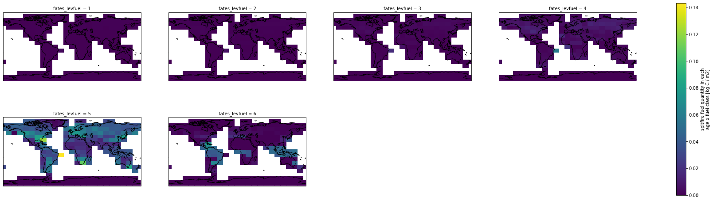
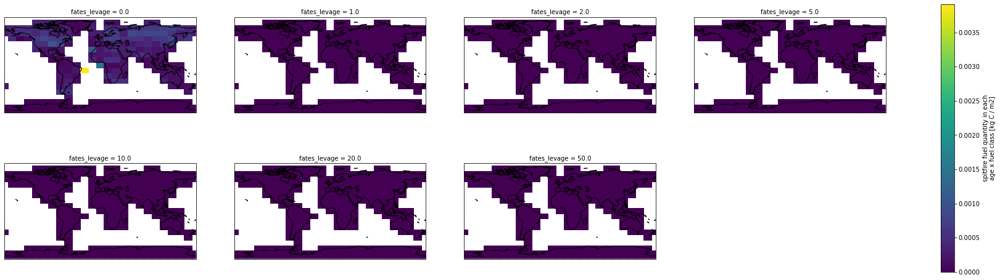

Checking age x fuel size class dimension¶
Pull request: https://github.com/NGEET/fates/pull/711
Import libraries¶
import numpy as np
import xarray as xr
import matplotlib.pyplot as plt
import cartopy.crs as ccrs
import ctsm_py.fates_xarray_funcs as fx
Load history output data¶
filename_history_output = 'data/newdim/newdim-test.fates-sci.1.43.1_api.14.1.0-5-g86e8f11c-fates_main_api_14.0.0-C0392347e-F86e8f11c.intel.clm2.h0.2000-01-01-00000.nc' # Test data
data = xr.open_dataset(filename_history_output)
Check the dimension mapping size¶
data.FUEL_AMOUNT_AGEFUEL.dims
('time', 'fates_levagefuel', 'lat', 'lon')
data.fates_agmap_levagefuel
<xarray.DataArray 'fates_agmap_levagefuel' (fates_levagefuel: 42)>
array([1, 1, 1, 1, 1, 1, 2, 2, 2, 2, 2, 2, 3, 3, 3, 3, 3, 3, 4, 4, 4, 4, 4, 4,
5, 5, 5, 5, 5, 5, 6, 6, 6, 6, 6, 6, 7, 7, 7, 7, 7, 7], dtype=int32)
Dimensions without coordinates: fates_levagefuel
Attributes:
long_name: FATES age-class map into patch age x fuel size
units: -xarray.DataArray
'fates_agmap_levagefuel'
- fates_levagefuel: 42
- 1 1 1 1 1 1 2 2 2 2 2 2 3 3 3 3 3 ... 5 5 5 5 6 6 6 6 6 6 7 7 7 7 7 7
array([1, 1, 1, 1, 1, 1, 2, 2, 2, 2, 2, 2, 3, 3, 3, 3, 3, 3, 4, 4, 4, 4, 4, 4, 5, 5, 5, 5, 5, 5, 6, 6, 6, 6, 6, 6, 7, 7, 7, 7, 7, 7], dtype=int32) - long_name :
- FATES age-class map into patch age x fuel size
- units :
- -
data.fates_fscmap_levagefuel
<xarray.DataArray 'fates_fscmap_levagefuel' (fates_levagefuel: 42)>
array([1, 2, 3, 4, 5, 6, 1, 2, 3, 4, 5, 6, 1, 2, 3, 4, 5, 6, 1, 2, 3, 4, 5, 6,
1, 2, 3, 4, 5, 6, 1, 2, 3, 4, 5, 6, 1, 2, 3, 4, 5, 6], dtype=int32)
Dimensions without coordinates: fates_levagefuel
Attributes:
long_name: FATES fuel size-class map into patch age x fuel size
units: -xarray.DataArray
'fates_fscmap_levagefuel'
- fates_levagefuel: 42
- 1 2 3 4 5 6 1 2 3 4 5 6 1 2 3 4 5 ... 3 4 5 6 1 2 3 4 5 6 1 2 3 4 5 6
array([1, 2, 3, 4, 5, 6, 1, 2, 3, 4, 5, 6, 1, 2, 3, 4, 5, 6, 1, 2, 3, 4, 5, 6, 1, 2, 3, 4, 5, 6, 1, 2, 3, 4, 5, 6, 1, 2, 3, 4, 5, 6], dtype=int32) - long_name :
- FATES fuel size-class map into patch age x fuel size
- units :
- -
np.max(data.fates_agmap_levagefuel) == data.fates_levage.size
<xarray.DataArray 'fates_agmap_levagefuel' ()> array(True)
xarray.DataArray
'fates_agmap_levagefuel'
- True
array(True)
np.max(data.fates_fscmap_levagefuel) == data.fates_levfuel.size
<xarray.DataArray 'fates_fscmap_levagefuel' ()> array(True)
xarray.DataArray
'fates_fscmap_levagefuel'
- True
array(True)
Plot the data¶
fuel_amount_agefuel_unroll = fx.agefuel_to_age_by_fuel(data.FUEL_AMOUNT_AGEFUEL,data)
tstop_idx = 364
fuelamount_endyear = fuel_amount_agefuel_unroll.isel(time=tstop_idx)
fg = fuelamount_endyear.isel(fates_levage=0).plot(transform=ccrs.PlateCarree(),
col='fates_levfuel', col_wrap = 4, figsize=(32,8),
subplot_kws={'projection': ccrs.PlateCarree()})
for ax in fg.axes.flat:
ax.coastlines()

tstop_idx = 364
fuelamount_endyear = fuel_amount_agefuel_unroll.isel(time=tstop_idx)
fg = fuelamount_endyear.isel(fates_levfuel=0).plot(transform=ccrs.PlateCarree(),
col='fates_levage', col_wrap = 4, figsize=(32,8),
subplot_kws={'projection': ccrs.PlateCarree()})
for ax in fg.axes.flat:
ax.coastlines()
